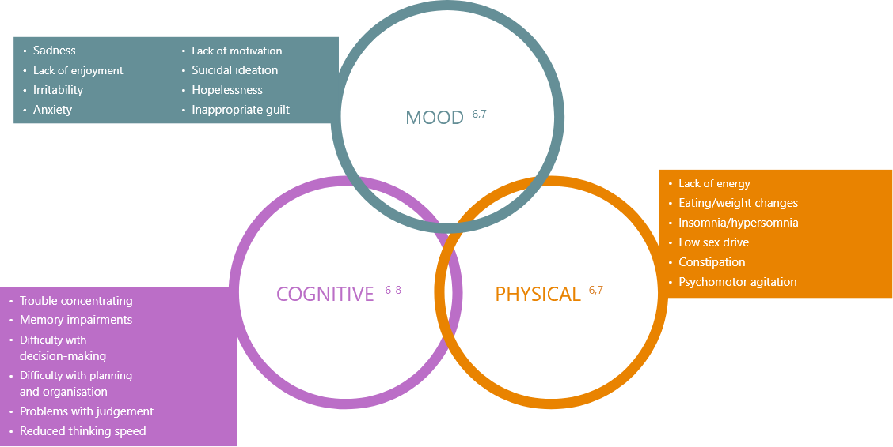
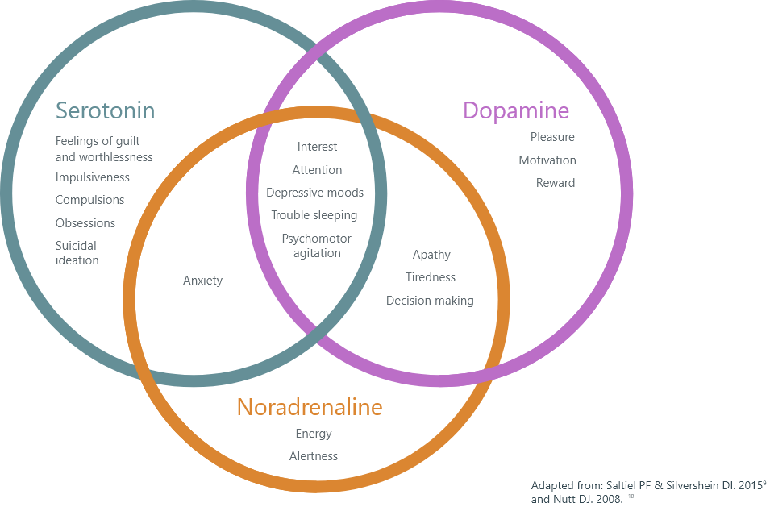
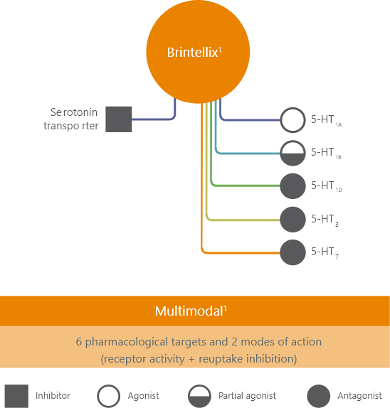

Brintellix (vortioxetine) is indicated for the treatment of major
depressive episodes in adults.1
Prescribing information can be accessed via the tab at the top of
this page.
About Brintellix (vortioxetine)
Re-engage with life2-5
Fictional patients used for illustrative purposes.
Depression is a multi-faceted disorder⁶

Multiple pathways are thought to be responsible for the different symptoms of depression⁹ ¹⁰

Brintellix exhibits a multimodal pharmacological profile¹
Brintellix is an antidepressant with a multimodal mechanism of action that
combines modulation of 5-HT receptor activity with SERT inhibition¹¹

Nonclinical data indicate that vortioxetine modulates neurotransmission in
several systems, including
predominantly the serotonin but probably also the norepinephrine, dopamine, histamine,
acetylcholine, GABA and glutamate systems. However, the precise contribution of the individual
targets to the observed pharmacodynamic profile remains unclear and caution should be applied when
extrapolating animal data directly to man.¹
Brintellix may help give your patients diagnosed with major depressive disorder (MDD) the life they
deserve.²³⁵
Find out more about Brintellix efficacy in the Patient experience section
National Institute for Health and Care Excellence (NICE)*¹²
Brintellix is recommended by the NICE Guidelines TA367 as an
option for treating major depressive episodes in adults whose condition has
responded inadequately to two antidepressants within the current episode*¹²
People whose treatment with Brintellix is not recommended in this
NICE guidance, but was started within the NHS before this guidance was
published, should be able to continue treatment until they and their NHS
clinician consider it appropriate to stop¹²
Scottish Medicines Consortium (SMC)¹³
The SMC has accepted Brintellix for restricted use in the
treatment of major depressive episodes in adults who have experienced an
inadequate response** to two or more previous antidepressants¹³
*NICE guidance is also valid in Wales - When a NICE technology appraisal recommends the use of a drug or
treatment, or other technology, the NHS in Wales must usually provide funding and resources for it within 3 months of the guidance being published.¹² ¹⁴
**Either due to lack of adequate efficacy and/or safety concerns/intolerability13
Brintellix: a generally well-tolerated option for your adult patients diagnosed with
MDD¹ ¹⁵ ¹⁶
Brintellix exhibits a low withdrawal rate due to tolerability issues in
short-term studies vs. placebo¹⁵
Findings based on an analysis designed to assess the
tolerability and
safety of Brintellix in 11 randomised, double-blind, placebo-controlled
short-term studies in depression and five long-term studies¹⁵
Nausea with Brintellix is usually mild to moderate and transient¹ ¹⁵
The most common adverse reaction with Brintellix is
nausea. Nausea with Brintellix is usually mild to moderate, transient, and
does not generally lead to treatment discontinuation,¹⁵Gastrointestinal adverse reactions, such as
nausea, occurred more
frequently in women than men.¹
Brintellix showed no clinically meaningful effects on hepatic, renal, and
cardiac function¹ ¹⁵ ¹⁷
Minimal effects on body weight relative to placebo1 ¹ ¹⁵
Brintellix is associated with a mean weight increase
of < 1 kg in patients treated with Brintellix for up to 12 months ¹ ¹⁵
From an analysis designed to assess the
tolerability and safety of Brintellix in 11 randomised,
double-blind, placebo-controlled short-term studies in depression
and five long-term studies. 10 of the short-term studies included
participants aged 18-75, and one included participants aged over
65¹
Low rate of patient-reported sexual dysfunction
at 5-15 mg*¹ ¹⁵
Patient-reported sexual dysfunction with Brintellix
was low, and similar to that in the placebo group during short-and long-term
treatment (1.6-1.8% vs 1.0%)¹⁵*Brintellix 15 mg is not available for use in
the UK. The 20 mg dose of Brintellix was associated with an increase in
sexual dysfunction compared to placebo.1 Sexual dysfunction was assessed
using the Arizona Sexual Experience Scale (ASEX)
Brintellix does not increase the incidence of insomnia or somnolence
relative to placebo†¹ ¹⁵
†In a pooled analysis of 11 short-term (6/8 week)
randomised, double-blind, placebo-controlled clinical trials, Brintellix did
not increase the incidence of insomnia or somnolence relative to
placebo.1,15 There have been reports of insomnia during the post-marketing
period¹
For full details please refer to the Brintellix Summary of
Product Characteristics1
MDD, major depressive disorder.
Brintellix Dosing: Prescribing Brintellix for your patients
Brintellix Dosing:¹
The starting and recommended dose for adult patients
< 65 years is Brintellix 10 mg once daily
Can be increased or decreased between 5 mg and 20 mg
daily, depending on the individual patient‘s response
After the depressive symptoms resolve, treatment for at least 6
months is recommended for consolidation of the antidepressive
response
Treatment discontinuation:¹
Can be stopped abruptly without the need for gradual
dose reduction
Elderly patients:¹
Patients aged ≥65 should always start on 5 mg once
daily
Caution is advised when treating patients ≥65 years
old with doses higher than 10 mg once daily for which data are
limited
Renal or hepatic impairment:¹
No dose adjustment is needed based on renal or
hepatic function
For full details please refer to the Brintellix Summary
of Product Characteristics¹
Taking Brintellix:1
Can be taken with or without food at any time of the
day
Brintellix contraindications and drug interactions¹
Key considerations when combining Brintellix with other medications:¹
Contraindications¹
Hypersensitivity to active substance or excipients
(please refer to the Summary of Product Characteristics for full
list of excipients)
Concomitant use with non-selective monoamine oxidase
inhibitors (MAOIs) or selective monoamine oxidase-A (MAO-A)
inhibitors (moclobemide)
Drugs with a serotonergic effect (opioids (including
tramadol); triptans (including sumatriptan)
St John’s wort - concomitant use of antidepressants
with serotonergic effect and St. John’s wort (Hypericum perforatum)
may result in a higher incidence of adverse reactions including
serotonin syndrome
Proceed with caution:¹
Medicinal products lowering the seizure threshold
[e.g. antidepressants (tricyclics, SSRIs, SNRIs), neuroleptics
(phenothiazines, thioxanthenes and butyrophenones), mefloquine,
bupropion, tramadol]
Anticoagulants and medicinal products known to affect
platelet function
No known effects with:¹
Diazepam
Oral contraceptives
Given that subjects with renal or hepatic
impairment are vulnerable and given
that the data on the use of Brintellix in these subpopulations are limited,
caution should be exercised when treating these patients.
Brintellix: Practical guidance on switching¹ ¹⁸
Switching to Brintellix from other antidepressants:¹⁸
SSRIs and SNRIs¹⁸
Direct switch possible
Mirtazapine¹⁸
Cross taper cautiously (usually over 1 to 2
weeks)
Tricyclic antidepressants (TCAs)¹⁸
Halve TCA dose, add Brintellix and then withdraw the
TCA slowly
Monoamine oxidase inhibitors (MAOIs)¹⁸
Taper and stop MAOI
Wait 14 days before initiating Brintellix
Guidance based on general recommendations from
switching between classes in the Maudsley Prescribing Guidelines on
Psychiatry.18 These are third party recommendations and prescribers
should use them in conjunction with their own clinical judgement.
The advice given should be treated with
caution
and patients should be very carefully monitored when ‘switching’ as
stated in the Maudsley Guidelines.18
It is very important that prescribers consult
the
Summary of Product Characteristics for any medication they are
considering switching from prior to making the switch.
Brintellix is not recommended for the
treatment of depression in children aged 7 to 11 years since the
safety and efficacy of Brintellix have not been established in this
age group. Brintellix should not be used in adolescents aged 12 to
17 years with major depressive disorder (MDD) because efficacy has
not been demonstrated (see section 5.1 of SmPC). In general, the
adverse reaction profile of Brintellix in adolescents was similar to
that seen for adults except for higher incidences reported in
adolescents than in adults for abdominal pain-related events and
suicidal ideation (see section 4.8 and 5.1 of SmPC). In clinical
studies in children and adolescents treated with antidepressants,
suicide-related behaviour (suicide attempt and suicidal thoughts)
and hostility (predominantly aggression, oppositional behaviour,
anger) were more frequently observed than in those treated with
placebo.
Suicide/suicidal thoughts or clinical worsening¹
Depression is associated with an increased
risk of suicidal thoughts, self-harm and suicide (suicide-related
events). This risk persists until significant remission occurs. As
improvement may not occur during the first few weeks or more of
treatment, patients should be closely monitored until such
improvement occurs. It is general clinical experience that the risk
of suicide may increase in the early stages of recovery.
Patients with a history of suicide-related
events or those exhibiting a significant degree of suicidal ideation
prior to commencement of treatment are known to be at greater risk
of suicidal thoughts or suicide attempts, and should receive careful
monitoring during treatment. A meta-analysis of placebo-controlled
clinical studies of antidepressants in adult patients with
psychiatric disorders showed an increased risk of suicidal behaviour
with antidepressants compared to placebo, in patients less than 25
years old.
Close supervision of patients and in
particular those at high risk should accompany treatment especially
in early treatment and following dose changes. Patients (and
caregivers of patients) should be alerted to the need to monitor for
any clinical worsening, suicidal behaviour or thoughts and unusual
changes in behaviour and to seek medical advice immediately if these
symptoms present.
Seizures¹
Seizures are a potential risk with
antidepressants. Therefore, Brintellix should be introduced
cautiously in patients who have a history of seizures or in patients
with unstable epilepsy (see section 4.5 of SmPC). Treatment should
be discontinued in any patient who develops seizures or for whom
there is an increase in seizure frequency.
Serotonin Syndrome (SS) or Neuroleptic Malignant Syndrome
(NMS)¹
Serotonin Syndrome (SS) or Neuroleptic
Malignant Syndrome (NMS), potentially life-threatening conditions,
may occur with Brintellix. The risk of SS or NMS is increased with
concomitant use of serotonergic-active substances (including opioids
and triptans), medicinal products that impair the metabolism of
serotonin (including MAOIs), antipsychotics, and other dopamine
antagonists. Patients should be monitored for the emergence of signs
and symptoms of SS or NMS (see sections 4.3 and 4.5). of SmPC).
Serotonin Syndrome symptoms include mental
status changes (e.g., agitation, hallucinations, coma), autonomic
instability (e.g., tachycardia, labile blood pressure,
hyperthermia), neuromuscular aberrations (e.g., hyperreflexia,
uncoordination) and/or gastrointestinal symptoms (e.g., nausea,
vomiting, diarrhoea). If this occurs, treatment with Brintellix
should be discontinued immediately and symptomatic treatment should
be initiated.
Mania/hypomania¹
Brintellix should be used with caution in
patients with a history of mania/hypomania and should be
discontinued in any patient entering a manic phase.
Aggression/agitation¹
Patients treated with antidepressants,
including Brintellix, may also experience feelings of aggression,
anger, agitation and irritability. Patient’s condition and disease
status should be closely monitored. Patients (and caregivers of
patients) should be alerted to seek medical advice, if
aggressive/agitated behaviour emerges or aggravates.
Haemorrhage¹
Bleeding abnormalities, such as
ecchymoses, purpura and other haemorrhagic events, such as
gastrointestinal or gynaecological bleeding, have been reported
rarely with the use of antidepressants with serotonergic effect,
including Brintellix. SSRIs/SNRIs may increase the risk of
postpartum haemorrhage, and this risk could potentially apply also
to Brintellix (see section 4.6 of SmPC). Caution is advised in
patients taking anticoagulants and/or medicinal products known to
affect platelet function [e.g., atypical antipsychotics and
phenothiazines, most tricyclic antidepressants, non-steroidal
anti-inflammatory drugs (NSAIDs), acetylsalicylic acid (ASA)] (see
section 4.5 of SmPC) and in patients with known bleeding
tendencies/disorders.
Hyponatraemia¹
Hyponatraemia, probably due to
inappropriate antidiuretic hormone secretion (SIADH), has been
reported rarely with the use of antidepressants with serotonergic
effect (SSRIs, SNRIs). Caution should be exercised in patients at
risk, such as the elderly, patients with cirrhosis of the liver or
patients concomitantly treated with medicinal products known to
cause hyponatraemia. Discontinuation of Brintellix should be
considered in patients with symptomatic hyponatraemia and
appropriate medical intervention should be instituted.
Glaucoma¹
Mydriasis has been reported in association
with use of antidepressants, including Brintellix. This mydriatic
effect has the potential to narrow the eye angle resulting in
increased intraocular pressure and angle-closure glaucoma. Caution
is advised when prescribing Brintellix to patients with increased
intraocular pressure, or those at risk of acute narrow-angle
glaucoma.
Elderly¹
Data on the use of Brintellix in elderly
patients with major depressive episodes are limited. Therefore,
caution should be exercised when treating patients ≥ 65 years of age
with doses higher than 10 mg Brintellix once daily (see sections
4.2, 4.8 and 5.2 of SmPC).
Renal or hepatic impairment¹
Given that subjects with renal or hepatic
impairment are vulnerable and given that the data on the use of
Brintellix in these subpopulations are limited, caution should be
exercised when treating these patients. (See section 4.2 and 5.2 of
SmPC).
Brintellix has a low rate of treatment-emergent adverse events¹ ¹⁵
The most common adverse reaction with Brintellix was nausea (very common (≥1/10)¹
Other common adverse events (≥1/100 to < 1/10) included:¹
Abnormal dreams
Dizziness
Diarrhoea, constipation, vomiting
Pruritus, including pruritus generalised, hyperhidrosis
Please refer to the Summary of Product Characteristics for a full
list of adverse
reactions (based on information from clinical trials and post-marketing
experience)¹
In a pooled analysis of 11 short-term (6/8 week) randomised, double-blind,
placebo-controlled clinical trials:¹⁵
Treatment-emergent adverse events (TEAEs) of ≥5% incidence in any treatment group¹⁵
Preferred term
Placebo
(n=1817)
Brintellix 5 mg (n=1013)
Brintellix 10 mg (n=894)
Brintellix 15 mg (n=449)
Brintellix 20 mg (n=662)
Venlafaxine 225 mg (n=113)
Duloxetine 60 mg (n=753)
% patients with TEAEs
58
65
61
69
65
75
76
Nausea
58
65
61
69
65
75
76
Headache
58
65
61
69
65
75
76
Dry mouth
58
65
61
69
65
75
76
Dizziness
58
65
61
69
65
75
76
Diarrhoea
58
65
61
69
65
75
76
Vomiting
58
65
61
69
65
75
76
Insomnia
58
65
61
69
65
75
76
Constipation
58
65
61
69
65
75
76
Somnolence
58
65
61
69
65
75
76
Fatigue
58
65
61
69
65
75
76
Decreased appetite
58
65
61
69
65
75
76
Sexual dysfunction
58
65
61
69
65
75
76
Hyperhidrosis
58
65
61
69
65
75
76
Duloxetine and venlafaxine were included as active references for study
validation only¹⁵
TEAEs above the orange line occur with a frequency ≥5% for Brintellix¹⁵
Brintellix 15 mg is not available for use in the UK.
Lundbeck. Brintellix. Summary of Product Characteristics GB and NI.
Chokka P et al. CNS Spectrums. 2019 Dec;24(6):616-27.
Cao B et al. Frontiers in psychiatry. 2019 Jan 31;10:17.
Baune BT et al. Int J Neuropsychopharm. 2018 Feb;21(2):97-107.
Fagiolini A et al. J Affect Disord. 2021 Mar 15;283:472-9.
American Psychiatric Association. Diagnostic and Statistical Manual of Mental
Disorders. Fifth Edition, Text Revision (DSM-5-TR). 2022.
https://doi.org/10.1176/appi.books.9780890425787.
NHS. Symptoms – clinical depression. Available at:
www.nhs.uk/mental-health/conditions/clinical-depression/symptoms/ Last accessed June
2023.
Marazziti D et al. Eur J Pharmacol 2010 Jul;626(1):83–86.
Saltiel PF, Silvershein DI. Neuropsychiatr Dis Treat. 2015 Mar 31;11:875-888.
Nutt DJ. J Clin psychiatry. 2008 Jan 1;69(Suppl E1):4-7.
Sanchez C et al. Pharmacology & therapeutics. 2015 Jan 1;145:43-57.
National Institute For Health And Care Excellence. TA367. November 2015.
Scottish Medicines Consortium. SMC No. (1158/16). July 2016.
All Wales Medicines Strategy Group. 1199 SOA. April 2014.
Baldwin DS et al. J Psychopharmacol 2016;30:242–252.
Citrome L. J Affect Disord 2016;196:225–233.
Wang Y et al. Clin Pharmacol Drug Dev 2013;2:298–309.
The Maudsley prescribing guidelines in psychiatry. 14th ed. Wiley Blackwell,
2021;335–341.